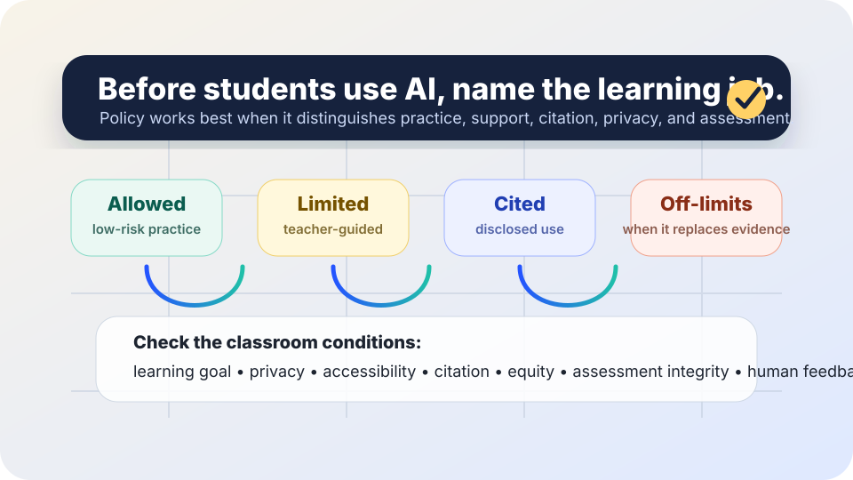

AI in education
AI classroom policy starter: name the learning job before naming the tool.
Use this as a starting point for classroom, department, club, tutoring, or school discussions about generative AI. The aim is not to pretend one rule fits every assignment. It is to make expectations visible before students, teachers, and families are left guessing.
The short answer
A useful AI classroom policy says when AI use is allowed, limited, cited, or off-limits, and connects each rule to the learning goal, privacy duties, accessibility needs, academic integrity, and available human support.
UNESCO’s guidance on generative AI in education emphasizes human agency, inclusion, equity, privacy, and age-appropriate safeguards. The U.S. Department of Education has also urged schools to keep humans in the loop, protect student data, evaluate AI tools, and center educational judgment rather than treating automation as a substitute for teaching.

A one-page starter policy
Adapt this in plain language. Do not copy it as legal or school-board advice.
1. Purpose
AI tools may be discussed and used only when they support learning, access, reflection, or feedback. They may not replace the student’s responsibility to understand, practice, show work, cite sources, or ask for help.
2. Four lanes for assignments
Allowed
AI may be used for low-risk support such as brainstorming questions, explaining a concept in another way, making a study plan, checking grammar, or practicing vocabulary, unless the assignment says otherwise.
Limited
AI may be used only in specified steps, such as outlining before a first draft, comparing feedback after a student-written answer, or generating practice problems that a student solves independently.
Cited
Students must disclose meaningful AI help when it shapes ideas, wording, code, images, analysis, translation, or sources. The disclosure should name the tool, date, prompt or task, and what changed because of it.
Off-limits
AI may not be used when the point is to assess unaided skill, personal reflection, original data collection, safety-critical judgment, private information, or a teacher-designated no-AI task.
3. Privacy and safety
Do not put classmates’ personal information, private school records, medical information, disciplinary details, family information, unpublished student work, or sensitive images into AI tools unless the school has approved the tool and the task.
4. Accessibility and equity
Students should not be penalized for lacking paid tools, fast devices, constant internet, or English-only interfaces. If AI is required, the school should provide an accessible, privacy-reviewed option and a non-AI alternative when needed.
5. Teacher responsibilities
Teachers should label each assignment lane, explain why, give examples of acceptable and unacceptable use, and provide a human route for questions. High-stakes decisions about discipline or grades should not rely only on AI-detector output.
Student disclosure template
A short disclosure is more useful than a mystery confession.
I used [tool name] on [date] for [brainstorming / explanation / grammar / code help / image generation / translation / other]. My prompt or task was: [brief description]. I checked or changed the output by [what I verified, rewrote, rejected, or learned].
Good disclosure focuses on the learning process, not punishment theater.
Before assigning AI use, check these six questions
- Learning goal: What should students practice or demonstrate without outsourcing it?
- Tool access: Is an approved, accessible, no-extra-cost tool available to every student who needs it?
- Privacy: What data must students avoid entering, and what school-approved option exists if data is needed?
- Accuracy: How will students verify AI output, sources, quotes, calculations, or code before relying on it?
- Disclosure: What counts as meaningful AI help, and what exact disclosure format should students use?
- Support: How can students ask a human for clarification without being assumed dishonest?
If the assignment cannot answer these questions, do not make AI use mandatory.
A note about AI detectors
Do not treat AI-detector scores as proof that a student cheated. Detection tools can be wrong, and students may be affected unevenly by writing style, language background, disability, or revision patterns. If a concern arises, use human review: compare drafts, ask process questions, look for assignment-specific evidence, and give students a chance to explain.
Sources and further reading
- UNESCO — Guidance for generative AI in education and research
- U.S. Department of Education — Artificial Intelligence and Future of Teaching and Learning (PDF)
- TeachAI — AI Guidance for Schools Toolkit
- NIST — AI Risk Management Framework
- OECD.AI — OECD AI Principles overview
- W3C WAI — Introduction to web accessibility